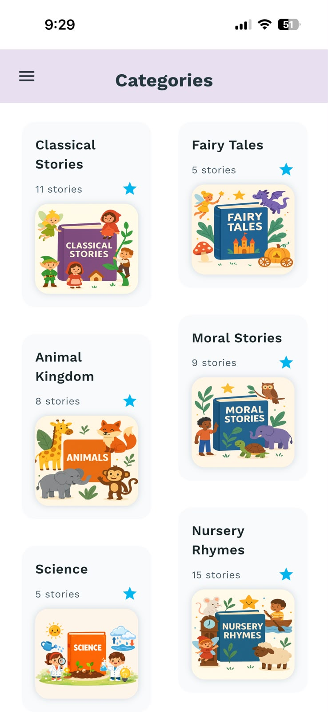

Five minutes can be enough for a meaningful bedtime story. The goal is not to rush through words. The goal is to create a small, calm moment that helps your child feel seen, safe, and ready to end the day.
Mood-based story choice is especially useful for toddlers and preschoolers because they do not always know how to explain what they feel. A story can give the feeling a soft shape. Then a parent can add one simple question, one cuddle, and one predictable goodnight phrase.
Quick story picker by mood
| Tonight's mood | Choose this kind of story | Use this parent prompt |
|---|---|---|
| Sleepy | Slow nature story with soft repetition | What helped the character feel cozy? |
| Worried | Small problem, kind helper, safe ending | Who helped the character feel brave? |
| Silly | Gentle funny story with a quiet finish | What was the funniest tiny part? |
| Sad | Comfort story about missing, sharing, or repair | What made the character feel cared for? |
| Restless | Journey story that slows down step by step | Can we take one slow breath like the character? |
| Curious | Wonder story about animals, weather, or the moon | What would you ask if you were there? |
For a sleepy child: choose softness and repetition
When your child is already sleepy, do not overdo the drama. Pick a simple story where the rhythm matters more than the plot. Gentle stories about the moon, a tucked-in garden, a sleepy train, or a small animal finding its nest can work beautifully.
Read a little slower than usual. Repeat comforting phrases. Let the story end with something finished: the door closes, the light dims, the friend arrives home, the blanket is tucked in.
For a worried child: make the ending feel safe
Worried children often need a story that names uncertainty without making it bigger. Choose a gentle problem: a character cannot find a favorite hat, feels nervous about tomorrow, hears an unfamiliar sound, or wonders if they can do something new.
The key is not to remove every feeling. The key is to show support. A kind grown-up, a helpful friend, a small plan, or a familiar routine can help the story land calmly. For more support, read our guide to bedtime stories for anxious toddlers.
For a silly child: let the giggle shrink
Silliness is not the enemy of bedtime. Sometimes a small laugh helps children release the last fizz of the day. The trick is to choose funny stories that get quieter instead of louder. A backward sock, a sleepy spoon, or a bear who keeps saying goodnight to the wrong object can be funny without turning the room into playtime.
After the funny part, lower your voice and slow the pace. You can say, "That was a good giggle. Now let's see how the story gets cozy."
For a sad child: choose comfort, not fixing
If your child seems sad, a story can offer company. Choose stories about a character who misses someone, makes a mistake, feels left out, or needs a quiet cuddle. Keep the language simple and avoid turning the story into a lesson too quickly.
A good sadness story does not say, "Do not be sad." It says, "You can feel sad and still be loved." That is often the line a child needs before sleep.
For a restless child: use a story that slows down
Restless children may need a story with movement at the beginning and stillness at the end. Start with a little journey: a leaf floating down a stream, a child walking home with a parent, or a small boat crossing a quiet pond. Then make each scene slower than the last.
You can also pair the story with one body cue: shoulders down, hands on blanket, one slow breath, or eyes looking at the same picture. Keep it gentle. The story is a bridge, not a command.
For a curious child: promise tomorrow
Curious children can turn bedtime into a question festival. That is lovely, and also occasionally exhausting. A wonder story helps by giving curiosity a place to rest. Choose a story about stars, plants, rain, baby animals, shadows, or the moon.
At the end, try this: "That is a tomorrow question. We can wonder about it again after breakfast." You are not shutting curiosity down. You are giving it a safe shelf until morning.
A simple 5-minute bedtime story routine
- Ask, "What kind of story do we need tonight?"
- Offer two choices, not the whole library.
- Read slowly and skip extra questions during the story.
- Ask one mood-matching prompt after the story.
- Close with the same goodnight phrase every night.
How to choose between two good stories
If two stories both seem right, choose the one with the calmer last scene. Toddlers often carry the final image of a story into the next part of bedtime. A story that ends with a warm blanket, a quiet home, a soft light, or a character feeling understood is usually a better final image than a story that ends with a loud joke or a new question.
You can also let your child choose between two mood labels instead of two titles: "Do we need a cozy story or a brave story tonight?" That small choice helps the child participate while still keeping the routine simple.
Three tiny sample stories by mood
These are not full Baboo Stories, but they show the kind of short, parent-friendly shape that works well when you only have five minutes.
How Baboo Stories supports mood-based bedtime
Baboo Stories is designed for parent-led reading, which makes mood-based story choice feel natural. Parents can choose a gentle story, read it in their own voice, soften or shorten parts as needed, and use a prompt to help the child talk about feelings without turning bedtime into a lecture.
If your family wants calm, short bedtime stories that do not depend on autoplay or noisy screens, Baboo fits especially well. You can also compare it with other formats in our guide to the best bedtime story app for toddlers.

Common questions parents ask
Are 5-minute bedtime stories long enough?
Yes. A short story can be enough for toddlers and preschoolers, especially on busy nights. The connection around the story often matters more than the number of pages.
Should I let my child choose the bedtime story?
Yes, but keep the choice small. Offer two gentle options that both fit bedtime. This gives your child agency without opening an endless negotiation.
What if my child wants the same story every night?
Repeating a story is normal and useful. Familiar stories can feel safe, predictable, and calming. You can vary one prompt or one voice while keeping the same story.
More bedtime reading from Baboo
For calmer story choices, read non-scary bedtime stories for toddlers. For routine help, try bedtime routines for toddlers. For post-story conversation, use our calming bedtime prompts.
Why mood-based stories are a useful Baboo angle
Many story apps organize content by big categories: animals, adventure, audio, animation, or age. Those filters are useful, but they do not always match the moment a parent is facing at bedtime. A tired parent is often thinking, "My child is wired," "My child is worried," or "My child needs something softer tonight."
That is why mood-based bedtime content gives Baboo a clearer search advantage. It speaks to the real parent problem behind the keyword. The page is not only about five-minute stories. It is about choosing the right five-minute story for the child's emotional state, then ending with a calm prompt and parent voice.
Sources and further reading
- CDC: Tips for Building Structure
- Sleep Foundation: Sleep Strategies for Kids
- American Academy of Pediatrics: Family Media Plan
Choose tonight's story by mood
Baboo Stories gives parents gentle read-aloud stories and prompts for the real moods that show up at bedtime.